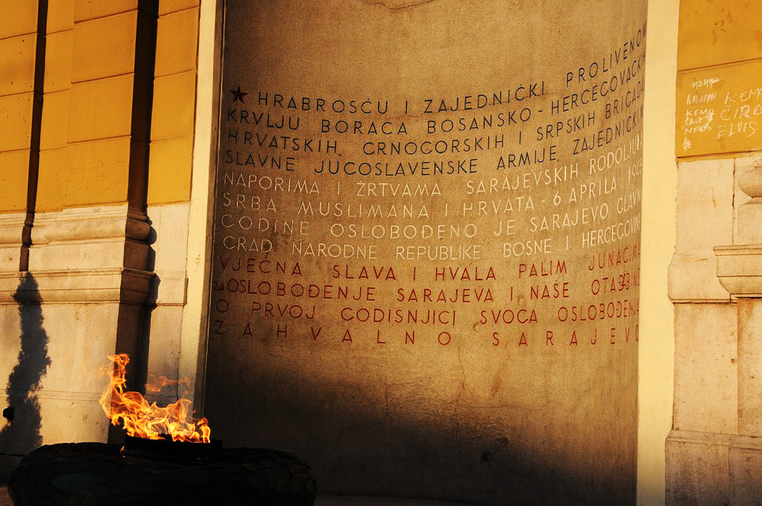
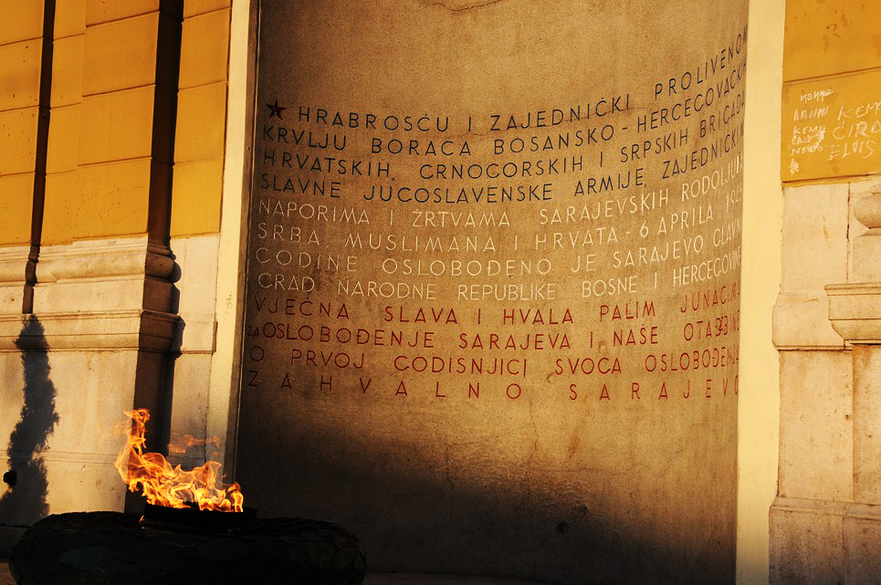

Where do i study?
University of "Saint Cyril & Methodius"(UKIM)
Saint Cyril and Methodius University in Skopje, founded in 1949, is the oldest and largest public university in North Macedonia.
Named after the Byzantine brothers and missionaries who created the Glagolitic alphabet, the university offers diverse programs across 23 faculties.
It has numerous international collaborations, providing students with opportunities for global exchanges and research projects.
The university's extensive library system holds over 2.5 million books, and it serves as a cultural hub with various events, lectures, and performances.
Known for its leading research and innovation, the university also offers vibrant campus life with many student organizations and clubs. Its notable alumni include influential politicians, scientists, and artists.
Faculty of computer science and engineering (FCSE- ФИНКИ)
The Faculty of Computer Science and Engineering (FINKI) at Ss. Cyril and Methodius University in Skopje, North Macedonia,
was established in 2011 by merging the Institute of Informatics and the Institute of Computer Engineering.
FINKI features an Innovation Center, hosts hackathons, and has a Robotics Club. It maintains global exchange programs, with alumni at top companies like Google and Microsoft. The campus promotes sustainability and fosters a culturally diverse community.
Im studying, Software Engineering and Information Systems. And i am now finishing my first year.

How about high-school ?
i finished high School at :
High School of Electrical Engineering "Mihajlo Pupin" (MPS)
Located in Skopje, North Macedonia, Mihajlo Pupin Electrical Engineering High School offers specialized programs in electronics, telecommunications, computer engineering, and automation. Named after physicist Mihajlo Pupin, it combines rigorous academics with hands-on learning. Students excel in competitions and secure successful careers, supported by partnerships with local businesses for internships and extracurricular clubs in robotics and programming.
I studied Computer Technology and Automation.
 
